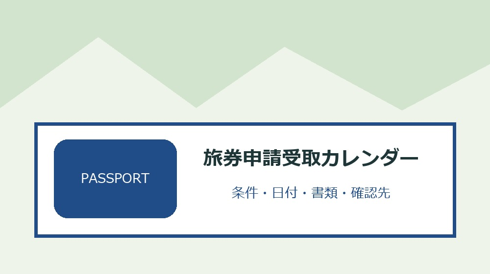
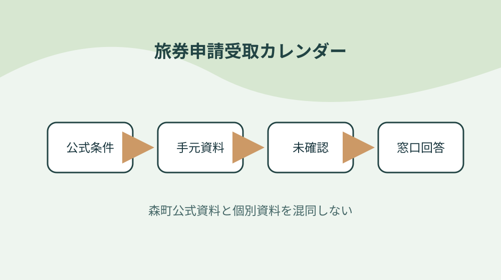

森町のパスポート申請を受付日・受取可能日・本人受取で管理する

結論：出発日から余裕を逆算することから始め、代理提出と本人受取を分ける条件と「森町の旅券ページは二〇二六年七月一日に更新された」の根拠を旅券申請受取カレンダーへ結びます。期限と次の確認先まで一行にすれば、森町のパスポート申請を受付日・受取可能日・本人受取で管理する作業の取り違えを減らせます。
出発日から余裕を逆算する
森町公式資料で確認できる事実は「森町の旅券ページは二〇二六年七月一日に更新された」です。出発日から余裕を逆算するでは、この条件を旅券申請受取カレンダーの一行へ写し、対象者・対象物・確認日を同じ欄に置きます。制度名だけをメモせず、どの資料のどの条件を確認したかが家族や担当者にもたどれる形にしてください。
出発日から余裕を逆算するを確かめるときは、「七月・八月受付分は受取目安が十三日目以降」という公式条件と、手元の通知・領収書・型番・日付を別列にします。必要資料が揃わなければ空欄を推測で埋めず、旅券申請受取カレンダーへ未確認の理由と次の照会先を記します。この表の役割は結論を急ぐことではなく、森町のパスポート申請を受付日・受取可能日・本人受取で管理するで起きる食い違いを安全に発見することです。
旅券申請受取カレンダーの作業日は、①「九月一日以降は十一日目以降が目安」の掲載資料と更新日を見る、②出発日から余裕を逆算するの手元資料を照合する、③不足一点だけを窓口へ尋ねる、④回答日と担当を追記する順に進めます。共通条件だけで個別可否を断定せず、森町のパスポート申請を受付日・受取可能日・本人受取で管理するに関する最新の運用を実行前に確かめます。
旅券申請受取カレンダーを引き継ぐ欄には、「日数は受付日を含み土日祝日等を除いて数える」の確認結果、次に行うこと、期限、原本の保管場所を書きます。出発日から余裕を逆算するを更新したら旧版を消さず、変更理由と回答した窓口を一行添えます。担当者が替わっても、その事実をどの資料で確かめたかまで戻れるため、同じ問い合わせや書類の取り直しを減らせます。
受付日と受取目安を別欄にする
森町公式資料で確認できる事実は「九月一日以降は十一日目以降が目安」です。受付日と受取目安を別欄にするでは、この条件を旅券申請受取カレンダーの一行へ写し、対象者・対象物・確認日を同じ欄に置きます。制度名だけをメモせず、どの資料のどの条件を確認したかが家族や担当者にもたどれる形にしてください。
受付日と受取目安を別欄にするを確かめるときは、「日数は受付日を含み土日祝日等を除いて数える」という公式条件と、手元の通知・領収書・型番・日付を別列にします。必要資料が揃わなければ空欄を推測で埋めず、旅券申請受取カレンダーへ未確認の理由と次の照会先を記します。この表の役割は結論を急ぐことではなく、森町のパスポート申請を受付日・受取可能日・本人受取で管理するで起きる食い違いを安全に発見することです。
旅券申請受取カレンダーの作業日は、①「受取可能日はパスけんで最新状況を確認する」の掲載資料と更新日を見る、②受付日と受取目安を別欄にするの手元資料を照合する、③不足一点だけを窓口へ尋ねる、④回答日と担当を追記する順に進めます。共通条件だけで個別可否を断定せず、森町のパスポート申請を受付日・受取可能日・本人受取で管理するに関する最新の運用を実行前に確かめます。
旅券申請受取カレンダーを引き継ぐ欄には、「申請窓口は平日八時三十分から十六時三十分」の確認結果、次に行うこと、期限、原本の保管場所を書きます。受付日と受取目安を別欄にするを更新したら旧版を消さず、変更理由と回答した窓口を一行添えます。担当者が替わっても、その事実をどの資料で確かめたかまで戻れるため、同じ問い合わせや書類の取り直しを減らせます。
繁忙期の日数変更を確認する
森町公式資料で確認できる事実は「受取可能日はパスけんで最新状況を確認する」です。繁忙期の日数変更を確認するでは、この条件を旅券申請受取カレンダーの一行へ写し、対象者・対象物・確認日を同じ欄に置きます。制度名だけをメモせず、どの資料のどの条件を確認したかが家族や担当者にもたどれる形にしてください。
繁忙期の日数変更を確認するを確かめるときは、「申請窓口は平日八時三十分から十六時三十分」という公式条件と、手元の通知・領収書・型番・日付を別列にします。必要資料が揃わなければ空欄を推測で埋めず、旅券申請受取カレンダーへ未確認の理由と次の照会先を記します。この表の役割は結論を急ぐことではなく、森町のパスポート申請を受付日・受取可能日・本人受取で管理するで起きる食い違いを安全に発見することです。
旅券申請受取カレンダーの作業日は、①「通常の交付は平日八時三十分から十七時」の掲載資料と更新日を見る、②繁忙期の日数変更を確認するの手元資料を照合する、③不足一点だけを窓口へ尋ねる、④回答日と担当を追記する順に進めます。共通条件だけで個別可否を断定せず、森町のパスポート申請を受付日・受取可能日・本人受取で管理するに関する最新の運用を実行前に確かめます。
旅券申請受取カレンダーを引き継ぐ欄には、「水曜日の交付は十八時四十五分まで」の確認結果、次に行うこと、期限、原本の保管場所を書きます。繁忙期の日数変更を確認するを更新したら旧版を消さず、変更理由と回答した窓口を一行添えます。担当者が替わっても、その事実をどの資料で確かめたかまで戻れるため、同じ問い合わせや書類の取り直しを減らせます。
戸籍謄本の発行日を確認する
森町公式資料で確認できる事実は「通常の交付は平日八時三十分から十七時」です。戸籍謄本の発行日を確認するでは、この条件を旅券申請受取カレンダーの一行へ写し、対象者・対象物・確認日を同じ欄に置きます。制度名だけをメモせず、どの資料のどの条件を確認したかが家族や担当者にもたどれる形にしてください。
戸籍謄本の発行日を確認するを確かめるときは、「水曜日の交付は十八時四十五分まで」という公式条件と、手元の通知・領収書・型番・日付を別列にします。必要資料が揃わなければ空欄を推測で埋めず、旅券申請受取カレンダーへ未確認の理由と次の照会先を記します。この表の役割は結論を急ぐことではなく、森町のパスポート申請を受付日・受取可能日・本人受取で管理するで起きる食い違いを安全に発見することです。
旅券申請受取カレンダーの作業日は、①「申請書・戸籍謄本・写真・本人確認書類等を確認する」の掲載資料と更新日を見る、②戸籍謄本の発行日を確認するの手元資料を照合する、③不足一点だけを窓口へ尋ねる、④回答日と担当を追記する順に進めます。共通条件だけで個別可否を断定せず、森町のパスポート申請を受付日・受取可能日・本人受取で管理するに関する最新の運用を実行前に確かめます。
旅券申請受取カレンダーを引き継ぐ欄には、「戸籍謄本は原則発行から六か月以内」の確認結果、次に行うこと、期限、原本の保管場所を書きます。戸籍謄本の発行日を確認するを更新したら旧版を消さず、変更理由と回答した窓口を一行添えます。担当者が替わっても、その事実をどの資料で確かめたかまで戻れるため、同じ問い合わせや書類の取り直しを減らせます。

写真規格を撮影前に読む
森町公式資料で確認できる事実は「申請書・戸籍謄本・写真・本人確認書類等を確認する」です。写真規格を撮影前に読むでは、この条件を旅券申請受取カレンダーの一行へ写し、対象者・対象物・確認日を同じ欄に置きます。制度名だけをメモせず、どの資料のどの条件を確認したかが家族や担当者にもたどれる形にしてください。
写真規格を撮影前に読むを確かめるときは、「戸籍謄本は原則発行から六か月以内」という公式条件と、手元の通知・領収書・型番・日付を別列にします。必要資料が揃わなければ空欄を推測で埋めず、旅券申請受取カレンダーへ未確認の理由と次の照会先を記します。この表の役割は結論を急ぐことではなく、森町のパスポート申請を受付日・受取可能日・本人受取で管理するで起きる食い違いを安全に発見することです。
旅券申請受取カレンダーの作業日は、①「旅券写真は縦四十五ミリ横三十五ミリ」の掲載資料と更新日を見る、②写真規格を撮影前に読むの手元資料を照合する、③不足一点だけを窓口へ尋ねる、④回答日と担当を追記する順に進めます。共通条件だけで個別可否を断定せず、森町のパスポート申請を受付日・受取可能日・本人受取で管理するに関する最新の運用を実行前に確かめます。
旅券申請受取カレンダーを引き継ぐ欄には、「受取には申請者本人が窓口へ行く」の確認結果、次に行うこと、期限、原本の保管場所を書きます。写真規格を撮影前に読むを更新したら旧版を消さず、変更理由と回答した窓口を一行添えます。担当者が替わっても、その事実をどの資料で確かめたかまで戻れるため、同じ問い合わせや書類の取り直しを減らせます。
本人確認書類の組合せを決める
森町公式資料で確認できる事実は「旅券写真は縦四十五ミリ横三十五ミリ」です。本人確認書類の組合せを決めるでは、この条件を旅券申請受取カレンダーの一行へ写し、対象者・対象物・確認日を同じ欄に置きます。制度名だけをメモせず、どの資料のどの条件を確認したかが家族や担当者にもたどれる形にしてください。
本人確認書類の組合せを決めるを確かめるときは、「受取には申請者本人が窓口へ行く」という公式条件と、手元の通知・領収書・型番・日付を別列にします。必要資料が揃わなければ空欄を推測で埋めず、旅券申請受取カレンダーへ未確認の理由と次の照会先を記します。この表の役割は結論を急ぐことではなく、森町のパスポート申請を受付日・受取可能日・本人受取で管理するで起きる食い違いを安全に発見することです。
旅券申請受取カレンダーの作業日は、①「発行から六か月以内に受け取らない旅券は失効する」の掲載資料と更新日を見る、②本人確認書類の組合せを決めるの手元資料を照合する、③不足一点だけを窓口へ尋ねる、④回答日と担当を追記する順に進めます。共通条件だけで個別可否を断定せず、森町のパスポート申請を受付日・受取可能日・本人受取で管理するに関する最新の運用を実行前に確かめます。
旅券申請受取カレンダーを引き継ぐ欄には、「水曜時間外窓口で扱える業務と申請受付時間は同じではない」の確認結果、次に行うこと、期限、原本の保管場所を書きます。本人確認書類の組合せを決めるを更新したら旧版を消さず、変更理由と回答した窓口を一行添えます。担当者が替わっても、その事実をどの資料で確かめたかまで戻れるため、同じ問い合わせや書類の取り直しを減らせます。
代理提出と本人受取を分ける
森町公式資料で確認できる事実は「発行から六か月以内に受け取らない旅券は失効する」です。代理提出と本人受取を分けるでは、この条件を旅券申請受取カレンダーの一行へ写し、対象者・対象物・確認日を同じ欄に置きます。制度名だけをメモせず、どの資料のどの条件を確認したかが家族や担当者にもたどれる形にしてください。
代理提出と本人受取を分けるを確かめるときは、「水曜時間外窓口で扱える業務と申請受付時間は同じではない」という公式条件と、手元の通知・領収書・型番・日付を別列にします。必要資料が揃わなければ空欄を推測で埋めず、旅券申請受取カレンダーへ未確認の理由と次の照会先を記します。この表の役割は結論を急ぐことではなく、森町のパスポート申請を受付日・受取可能日・本人受取で管理するで起きる食い違いを安全に発見することです。
旅券申請受取カレンダーの作業日は、①「森町の旅券ページは二〇二六年七月一日に更新された」の掲載資料と更新日を見る、②代理提出と本人受取を分けるの手元資料を照合する、③不足一点だけを窓口へ尋ねる、④回答日と担当を追記する順に進めます。共通条件だけで個別可否を断定せず、森町のパスポート申請を受付日・受取可能日・本人受取で管理するに関する最新の運用を実行前に確かめます。
旅券申請受取カレンダーを引き継ぐ欄には、「七月・八月受付分は受取目安が十三日目以降」の確認結果、次に行うこと、期限、原本の保管場所を書きます。代理提出と本人受取を分けるを更新したら旧版を消さず、変更理由と回答した窓口を一行添えます。担当者が替わっても、その事実をどの資料で確かめたかまで戻れるため、同じ問い合わせや書類の取り直しを減らせます。
パスけんで受取可能日を確認する
森町公式資料で確認できる事実は「森町の旅券ページは二〇二六年七月一日に更新された」です。パスけんで受取可能日を確認するでは、この条件を旅券申請受取カレンダーの一行へ写し、対象者・対象物・確認日を同じ欄に置きます。制度名だけをメモせず、どの資料のどの条件を確認したかが家族や担当者にもたどれる形にしてください。
パスけんで受取可能日を確認するを確かめるときは、「七月・八月受付分は受取目安が十三日目以降」という公式条件と、手元の通知・領収書・型番・日付を別列にします。必要資料が揃わなければ空欄を推測で埋めず、旅券申請受取カレンダーへ未確認の理由と次の照会先を記します。この表の役割は結論を急ぐことではなく、森町のパスポート申請を受付日・受取可能日・本人受取で管理するで起きる食い違いを安全に発見することです。
旅券申請受取カレンダーの作業日は、①「九月一日以降は十一日目以降が目安」の掲載資料と更新日を見る、②パスけんで受取可能日を確認するの手元資料を照合する、③不足一点だけを窓口へ尋ねる、④回答日と担当を追記する順に進めます。共通条件だけで個別可否を断定せず、森町のパスポート申請を受付日・受取可能日・本人受取で管理するに関する最新の運用を実行前に確かめます。
旅券申請受取カレンダーを引き継ぐ欄には、「日数は受付日を含み土日祝日等を除いて数える」の確認結果、次に行うこと、期限、原本の保管場所を書きます。パスけんで受取可能日を確認するを更新したら旧版を消さず、変更理由と回答した窓口を一行添えます。担当者が替わっても、その事実をどの資料で確かめたかまで戻れるため、同じ問い合わせや書類の取り直しを減らせます。
水曜延長で扱う範囲を確かめる
森町公式資料で確認できる事実は「九月一日以降は十一日目以降が目安」です。水曜延長で扱う範囲を確かめるでは、この条件を旅券申請受取カレンダーの一行へ写し、対象者・対象物・確認日を同じ欄に置きます。制度名だけをメモせず、どの資料のどの条件を確認したかが家族や担当者にもたどれる形にしてください。
水曜延長で扱う範囲を確かめるを確かめるときは、「日数は受付日を含み土日祝日等を除いて数える」という公式条件と、手元の通知・領収書・型番・日付を別列にします。必要資料が揃わなければ空欄を推測で埋めず、旅券申請受取カレンダーへ未確認の理由と次の照会先を記します。この表の役割は結論を急ぐことではなく、森町のパスポート申請を受付日・受取可能日・本人受取で管理するで起きる食い違いを安全に発見することです。
旅券申請受取カレンダーの作業日は、①「受取可能日はパスけんで最新状況を確認する」の掲載資料と更新日を見る、②水曜延長で扱う範囲を確かめるの手元資料を照合する、③不足一点だけを窓口へ尋ねる、④回答日と担当を追記する順に進めます。共通条件だけで個別可否を断定せず、森町のパスポート申請を受付日・受取可能日・本人受取で管理するに関する最新の運用を実行前に確かめます。
旅券申請受取カレンダーを引き継ぐ欄には、「申請窓口は平日八時三十分から十六時三十分」の確認結果、次に行うこと、期限、原本の保管場所を書きます。水曜延長で扱う範囲を確かめるを更新したら旧版を消さず、変更理由と回答した窓口を一行添えます。担当者が替わっても、その事実をどの資料で確かめたかまで戻れるため、同じ問い合わせや書類の取り直しを減らせます。
旧旅券と手数料を受取袋へ入れる
森町公式資料で確認できる事実は「受取可能日はパスけんで最新状況を確認する」です。旧旅券と手数料を受取袋へ入れるでは、この条件を旅券申請受取カレンダーの一行へ写し、対象者・対象物・確認日を同じ欄に置きます。制度名だけをメモせず、どの資料のどの条件を確認したかが家族や担当者にもたどれる形にしてください。
旧旅券と手数料を受取袋へ入れるを確かめるときは、「申請窓口は平日八時三十分から十六時三十分」という公式条件と、手元の通知・領収書・型番・日付を別列にします。必要資料が揃わなければ空欄を推測で埋めず、旅券申請受取カレンダーへ未確認の理由と次の照会先を記します。この表の役割は結論を急ぐことではなく、森町のパスポート申請を受付日・受取可能日・本人受取で管理するで起きる食い違いを安全に発見することです。
旅券申請受取カレンダーの作業日は、①「通常の交付は平日八時三十分から十七時」の掲載資料と更新日を見る、②旧旅券と手数料を受取袋へ入れるの手元資料を照合する、③不足一点だけを窓口へ尋ねる、④回答日と担当を追記する順に進めます。共通条件だけで個別可否を断定せず、森町のパスポート申請を受付日・受取可能日・本人受取で管理するに関する最新の運用を実行前に確かめます。
旅券申請受取カレンダーを引き継ぐ欄には、「水曜日の交付は十八時四十五分まで」の確認結果、次に行うこと、期限、原本の保管場所を書きます。旧旅券と手数料を受取袋へ入れるを更新したら旧版を消さず、変更理由と回答した窓口を一行添えます。担当者が替わっても、その事実をどの資料で確かめたかまで戻れるため、同じ問い合わせや書類の取り直しを減らせます。
良い点
森町公式資料で確認できる事実は「通常の交付は平日八時三十分から十七時」です。良い点では、この条件を旅券申請受取カレンダーの一行へ写し、対象者・対象物・確認日を同じ欄に置きます。制度名だけをメモせず、どの資料のどの条件を確認したかが家族や担当者にもたどれる形にしてください。
良い点を確かめるときは、「水曜日の交付は十八時四十五分まで」という公式条件と、手元の通知・領収書・型番・日付を別列にします。必要資料が揃わなければ空欄を推測で埋めず、旅券申請受取カレンダーへ未確認の理由と次の照会先を記します。この表の役割は結論を急ぐことではなく、森町のパスポート申請を受付日・受取可能日・本人受取で管理するで起きる食い違いを安全に発見することです。
旅券申請受取カレンダーの作業日は、①「申請書・戸籍謄本・写真・本人確認書類等を確認する」の掲載資料と更新日を見る、②良い点の手元資料を照合する、③不足一点だけを窓口へ尋ねる、④回答日と担当を追記する順に進めます。共通条件だけで個別可否を断定せず、森町のパスポート申請を受付日・受取可能日・本人受取で管理するに関する最新の運用を実行前に確かめます。
旅券申請受取カレンダーを引き継ぐ欄には、「戸籍謄本は原則発行から六か月以内」の確認結果、次に行うこと、期限、原本の保管場所を書きます。良い点を更新したら旧版を消さず、変更理由と回答した窓口を一行添えます。担当者が替わっても、その事実をどの資料で確かめたかまで戻れるため、同じ問い合わせや書類の取り直しを減らせます。
注文したい点
森町公式資料で確認できる事実は「申請書・戸籍謄本・写真・本人確認書類等を確認する」です。注文したい点では、この条件を旅券申請受取カレンダーの一行へ写し、対象者・対象物・確認日を同じ欄に置きます。制度名だけをメモせず、どの資料のどの条件を確認したかが家族や担当者にもたどれる形にしてください。
注文したい点を確かめるときは、「戸籍謄本は原則発行から六か月以内」という公式条件と、手元の通知・領収書・型番・日付を別列にします。必要資料が揃わなければ空欄を推測で埋めず、旅券申請受取カレンダーへ未確認の理由と次の照会先を記します。この表の役割は結論を急ぐことではなく、森町のパスポート申請を受付日・受取可能日・本人受取で管理するで起きる食い違いを安全に発見することです。
旅券申請受取カレンダーの作業日は、①「旅券写真は縦四十五ミリ横三十五ミリ」の掲載資料と更新日を見る、②注文したい点の手元資料を照合する、③不足一点だけを窓口へ尋ねる、④回答日と担当を追記する順に進めます。共通条件だけで個別可否を断定せず、森町のパスポート申請を受付日・受取可能日・本人受取で管理するに関する最新の運用を実行前に確かめます。
旅券申請受取カレンダーを引き継ぐ欄には、「受取には申請者本人が窓口へ行く」の確認結果、次に行うこと、期限、原本の保管場所を書きます。注文したい点を更新したら旧版を消さず、変更理由と回答した窓口を一行添えます。担当者が替わっても、その事実をどの資料で確かめたかまで戻れるため、同じ問い合わせや書類の取り直しを減らせます。
対案・結論
旅券申請受取カレンダーは、全項目を一度で完成させるより、「出発日から余裕を逆算する」から確定する方が実用的です。公式条件、手元資料、窓口回答を別欄にし、七月・八月受付分は受取目安が十三日目以降という事実と個別事情の食い違いを消さずに残してください。
代理提出と本人受取を分けるに費用や契約が伴う場合は、対象・期限・事前手続を再確認してから進めます。森町の共通案内だけで個別案件を断定せず、通常の交付は平日八時三十分から十七時という確認済み情報と手元資料を示して尋ねます。
結論は、旧旅券と手数料を受取袋へ入れるまでを今日の一行にし、次の確認日を決めることです。旅券申請受取カレンダーがあれば、森町のパスポート申請を受付日・受取可能日・本人受取で管理するの作業を家族や社内担当が同じ根拠から続けられます。
水曜時間外窓口で扱える業務と申請受付時間は同じではないという条件が更新された場合は旧版を削除せず、変更日と採用理由を記します。旅券申請受取カレンダーに履歴が残れば、古い書類や判断を使った理由も後から説明できます。
大石の視点
ここまでの「森町の旅券ページは二〇二六年七月一日に更新された」などの制度条件は森町公式資料で確認できる事実です。以下は、私、大石浩之が旅券申請受取カレンダーを運用するためにすすめる方法であり、森町や関係機関の公式見解ではありません。
私は旅券申請受取カレンダーを紙一枚から始め、受付日と受取目安を別欄にするの原本を動かさず、写しや写真へ番号を付ける方法を勧めます。森町のパスポート申請を受付日・受取可能日・本人受取で管理するの確認で原本を持ち歩く回数を減らせるからです。
パスけんで受取可能日を確認するに未確認欄が残っても失敗扱いしません。確認先と期限が書かれた未確認欄は、水曜日の交付は十八時四十五分までを根拠なく個別案件へ当てはめるより価値があります。
最後に、旅券申請受取カレンダーに含む個人情報や事業情報は共有範囲を決めます。旧旅券と手数料を受取袋へ入れるための内部版と外部提出版を同じファイルにせず、必要部分だけを渡せる構成にしてください。
よくある質問
旅券申請受取カレンダーで最初に確認することは何ですか。
対象者・対象物、基準日、手元資料、森町公式の条件を一行にします。森町の旅券ページは二〇二六年七月一日に更新されたという共通条件を起点にしつつ、個別の可否は資料と窓口回答で確定します。
資料が足りないまま旅券申請受取カレンダーを作れますか。
作れます。繁忙期の日数変更を確認するに不足があれば未確認と記し、必要資料、確認先、確認期限を残します。推測で埋めないことが、旅券申請受取カレンダーから安全に作業を再開する条件です。
森町公式ページを保存すれば再確認は不要ですか。
水曜時間外窓口で扱える業務と申請受付時間は同じではないなどの条件は変わることがあります。旅券申請受取カレンダーへURL、ページ名、確認日を残し、代理提出と本人受取を分けるを実行する直前に現行案内を再確認してください。
旅券申請受取カレンダーを家族や担当者へ渡すとき何を添えますか。
旧旅券と手数料を受取袋へ入れるため、確認済み事実、未確認事項、期限、次の担当、原本の保管場所、町へ尋ねた日と回答を添えます。旅券申請受取カレンダーに含む個人情報は渡す相手と保管方法を限定します。
公式情報源
- パスポート（2026年8月19日確認）
- 水曜日時間外窓口業務（2026年8月19日確認）
最終確認日：2026-08-19 ／ 公表事実と執筆者の解釈・意見を分けて記載しています。